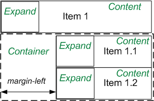

-
Item 1
-
Item 1.1
-
Item 1.2
-
-
Item 2 with long awesome title
-
Item 2.1
-
Item 2.2
-
Item 2.2.1
-
-
-
Item 3
-
Item 3.1
-
Item 3.2
-
-
Item 4
Tree View: how it works
Briefly instruction, how I implemented my JavaScript tree, what it includes and how it works at all. Please note - all the markup is used exclusively semantic. You may see this on image below.
- Every node has class "Node" and includes icon "Expand", title "Content" and container for childrens "Container"
- "IsRoot" says that node is root of the tree "ExpandOpen" means that node is open
- "Container" has the all children, one or more node. I think it's good practice becouse for show/hide child-nodes we just need to refer to the Container
- "ExpandLeaf" mean that node is leaf of tree
- Structural lines of the tree, making a clearer hierarchy, without used extra tags
- I use the principle of two-columm layout it's mean float:left and width of element + margin-left div Content
Next are handler of click on tree. What in totaly I did :
- To determine whether there was a click on the icon Expand, using event.target
- Get a Node for the properly icon
- If node - are not a leaf, then change the class ExpandOpen - ExpandClosed
Next I worked for add nodes and control features. I tried to do all handlers and methods in object literal. I never used to factory pattern in my life, but think it was a good practice for me :)
- Create input field for name of futures node, add buttons to add node or leaf
- Handlers for creating new node
- Method to get input vulue
- Handler for to check/uncheck node. If node check, to this node add 'Highlight' class. After that we can dynamicaly add new nodes, else bottons will add Root nodes. Also we can check a few nodes and more than one nodes
And finaly stem was context munu on dbl click on properly nodes. I think to write own plugin for this task. It's not so hard, but it would took me a long time. I couldn't affort this, that is why I choose jQuery plugin. If it's wrong way, sorry about this. Finaly what I did to achive this :
- I used plugin, that cross-browser compatible rewrited .addEventListener or .attachEvent in my tree viewer.
- Create handler that add class for click/unclick node
- Implement menu within create new root node, node and leaf. Also user have ability to delete or rename properly node
- Sorry, but I used jQuery selector. I want to be honest with you. Maybe it's wrong because task based to not use any framework. I just want to did this task as fast as I can
At the end I want to say few words generaly about this task
- I realy enjoy working with this task. I achive new knowledge and structure of JavaScript code at all. And I aprreciative for clever task
- It's not finished work for 100%, it's protope that should show tha I may achive this task
- By the logic, I think that my JavaScript Tree Viewer still need to be added a few features in future : drag'n'drop, ajax(dinamycaly load node), save with cookies or local storage and more